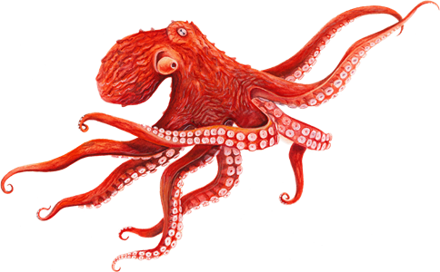
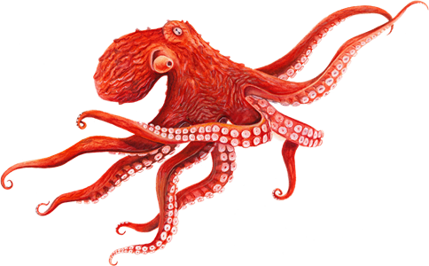
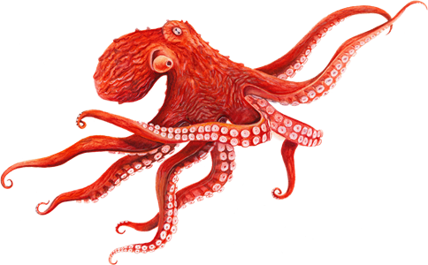

The Deep Sea
The mysteries of the deep
 


The mysteries of the deep

The Sperm Whale
Essa batalha é quase uma lenda. As cachalotes podem mergulhar até 9.000 pés de profundidade. Nessas profundezas encontram seu prato predileto: lulas-gigantes. O resultado desse confronto é uma batalha assustadora, com a cachalote muitas vezes ( mas não sempre), ganhando uma deliciosa refeição.